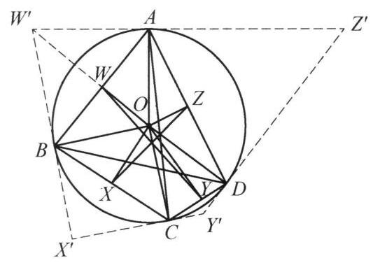

99 例 4：四圆共点与位似变换相似
99.1 题目
设四边形 {ABCD} 内接于圆 O, W, X, Y, Z 分别为 {AB},{BC},{CD},{DA} 的中点. 证明: \triangle {AOC},\triangle {BOD},\triangle {WOY},\triangle {XOZ} 的外接圆除了点 O 之外还有一个公共点.

图 7-3
99.2 参考解答
如图 7-3,以 O 为反演中心,圆 O 的半径为反演半径作反演变换. 在此变换下,点 W, X, Y, Z 的反演像分别为 {W}^{\prime },{X}^{\prime },{Y}^{\prime },{Z}^{\prime } . 注意到 {W}^{\prime } 在射线 {OW} 上且 {OW} \cdot O{W}^{\prime } = O{A}^2 . 因为 W 是 {AB} 的中点,所以 \angle {OWA} = {90}^{ \circ } ,结合 {OW} \cdot O{W}^{\prime } = \; O{A}^2 知 \angle {W}^{\prime }{AO} = {90}^{ \circ } ,即 {W}^{\prime }A 与圆 O 相切.
同理可得 {X}^{\prime }B,{Y}^{\prime }C,{Z}^{\prime }D 均与圆 O 相切,于是四边形 {W}^{\prime }{X}^{\prime }{Y}^{\prime }{Z}^{\prime } 为圆 O 的外切四边形,切点分别为 B, C, D, A . 由牛顿定理,得 {AC},{BD},{W}^{\prime }{Y}^{\prime },{X}^{\prime }{Z}^{\prime } 共点于 {M}^{\prime } ,于是圆 {AOC} ,圆 {BOD} ,圆 {WOY} ,圆 {XOZ} 也交于 {M}^{\prime } 的反演点 M .
99.3 解题思路与分析
教材和题解书在写证明时，习惯采用“从因到果”的综合法（正向书写）：一上来先抛出“作反演变换”，就像变魔术一样凭空拉出四条切线，最后再用一个“牛顿定理”一锤定音。这种写法掩盖了思考的痕迹，自然会让人觉得莫名其妙。
如果把思维过程倒过来，用“从果索因”的分析法（逆向破题）以及命题人构造题目的视角来看，这个证明其实是由三个非常自然的“条件反射”串联起来的：
99.3.1 第一步：看到“多圆过同一点 O”，条件反射想到“以 O 为中心反演”
我们先看结论：要证 \odot AOC, \odot BOD, \odot WOY, \odot XOZ 四个圆除点 O 外还共点于 M。
在平面几何中，证明“多个圆共点”通常很难直接下手，但有一个极其强烈的结构信号——这四个圆全都经过同一个已知点 O！ * 反演的基本性质：以点 O 为反演中心作反演变换，任何过点 O 的圆，都会被直接拉直，变成一条不过点 O 的直线。 * 因此，“四个过点 O 的圆交于另一点 M”在反演下完全等价于“四条直线交于一点 M'”。把“多圆共点”转化为“多线共点”，是几何中的标准降维操作。
紧接着的灵魂一问：反演半径选多少最划算？ 既然点 A, B, C, D 都在已知的圆 O 上，如果我们直接把圆 O 的半径 R 选作反演半径（即以圆 O 为反演基圆），那么圆 O 上的所有点在反演下都是不动点（A'=A, B'=B, C'=C, D'=D）！ 这样一来，前两个圆的像甚至都不用算： * \odot AOC 反演后直接变成直线 AC； * \odot BOD 反演后直接变成直线 BD。
此时，那个神秘的公共交点 M' 已经暴露了——它必然就是对角线 AC 与 BD 的交点！剩下的任务仅仅是证明：\odot WOY 和 \odot XOZ 反演后的两条直线 W'Y' 和 X'Z'，也经过 AC 与 BD 的交点 M'。
99.3.2 第二步：翻译条件——“弦的中点”在反演下的真实身份是“极点”
确定了以圆 O 为基圆作反演后，我们需要看看已知条件中的“弦中点 W, X, Y, Z”会变成什么。
这里藏着圆几何中一对最经典的对偶转换（极点与极线）： * 已知 W 是弦 AB 的中点，由垂径定理知 OW \perp AB。 * 设 W 的反演点为 W'，则 W' 在射线 OW 上，且满足 OW \cdot OW' = R^2 = OA^2。 * 在 \triangle OAW' 中，OA 是斜边 OW' 上的比例中项（射影定理的逆定理），这直接迫使 \angle OAW' = 90^\circ，同理 \angle OBW' = 90^\circ。
也就是说，“弦 AB 的中点 W”关于圆 O 的反演点 W'，天然就是“过 A, B 两点的切线交点”（即弦 AB 关于圆 O 的极点）！ 这绝不是凑出来的巧合，而是圆的极点与极线的基本定义：极点 W' 到圆心的距离与极线 AB 到圆心的距离之积等于半径的平方。
99.3.3 第三步：为什么四线共点？（不背“牛顿定理”也能一眼看穿）
经过前两步的机械翻译，原题已经完全等价于这样一个命题： > 设圆 O 的内接四边形为 ABCD，过 A, B, C, D 作圆 O 的切线围成外切四边形 W'X'Y'Z'，证明：AC, BD, W'Y', X'Z' 四线共点。
书上的证明直接引用了外切四边形的“牛顿定理”（布里安松定理的退化情形）。但如果你从射影几何（配极原则）的角度看，这个结论其实是完全透明的，根本不需要死记定理：
- 设内接完全四边形 ABCD 的对角线交点为 M' = AC \cap BD，两组对边延长线的交点分别为 E = AB \cap CD 和 F = AD \cap BC。
- 由圆内接完全四边形的调和性质（自配极三角形定理），对角线交点 M' 关于圆 O 的极线恰好是直线 EF。
- 另一方面，W' 是弦 AB 的极点，Y' 是弦 CD 的极点，因此直线 W'Y' 的极点就是 AB 与 CD 的交点 E。
- 根据配极原则（La Hire 定理）：因为点 E 在点 M' 的极线（即直线 EF）上，所以点 E 的极线（即直线 W'Y'）必然经过点 M'！
- 同理，直线 X'Z' 的极点是 F，由于 F 也在直线 EF 上，所以 X'Z' 也必然经过点 M'。
99.3.4 还原命题人的“障眼法”
如果站在命题人如何编造这道题的视角，一切就更加真相大白了：
- 原始素材：命题人手头有一个极其经典、众人皆知的射影几何模型——圆内接四边形 ABCD 与切线构成的外切四边形 W'X'Y'Z' 中，四条直线 AC, BD, W'Y', X'Z' 共点于 M'。
- 施加伪装：如果直接考这个结论，懂极点极线或牛顿定理的学生一秒钟就能做出来。于是命题人以圆心 O 为中心作了一次反演变换：
- 擦掉所有的切线和交点 W', X', Y', Z'，把它们变成圆内部的弦中点 W, X, Y, Z；
- 把原本共点的四条直线 AC, BD, W'Y', X'Z'，变成四个过圆心 O 的外接圆 \odot AOC, \odot BOD, \odot WOY, \odot XOZ。
- 呈现题目：最终呈现在你面前的，就是这道表面上看不到任何切线、只有弦中点和四个圆的“例 3”。而书上的解答，不过是把命题人藏起来的“反演拉链”重新拉开了而已。
99.4 分步证明
99.4.1 步骤 0：已知条件与构型
设凸四边形 ABCD 内接于圆 O。 取各边中点分别记为 W (AB 中点)、X (BC 中点)、Y (CD 中点)、Z (DA 中点)。 目标是证明：△AOC、△BOD、△WOY、△XOZ 的四个外接圆除了点 O 之外，还有一个公共点 M。
99.4.2 步骤 1：以 O 为中心建立反演变换
以圆心 O 为反演中心、圆 O 的半径 R 为反演半径作反演变换。 对于任意点 P (P ≠ O)，其反演点 P’ 位于射线 OP 上，满足： OP · OP’ = R2 在此变换下，四边形顶点 A, B, C, D 均在反演圆上，故其反演像为自身（A’=A, B’=B, C’=C, D’=D）； 中点 W, X, Y, Z 的反演像分别记为 W’, X’, Y’, Z’。
99.4.3 步骤 2：证明 W’X’Y’Z’ 为圆 O 的外切四边形
以弦 AB 及其反演点 W’ 为例： 因为 W 是 AB 的中点，由垂径定理知 OW ⊥ AB，即 ∠OWA = 90°。 由反演定义，OW · OW’ = R2 = OA2，得到 OW / OA = OA / OW’。 结合公共角 ∠AOW = ∠W’OA，可得 ΔOWA ∼ ΔOAW’。 因此 ∠W’AO = ∠OWA = 90°，即 W’A 与圆 O 相切于点 A！ 同理，W’B, X’B, X’C, Y’C, Y’D, Z’D, Z’A 均与圆 O 相切。 于是四边形 W’X’Y’Z’ 为圆 O 的外切四边形，切点顺次为 B, C, D, A。
99.4.4 步骤 3：牛顿定理：四线共点于 M’
在圆外切四边形 W’X’Y’Z’ 中： • 两组对边切点的连线分别为弦 AC 与弦 BD； • 两条对角线分别为 W’Y’ 与 X’Z’。 根据牛顿定理（Newton’s Theorem）：圆外切四边形的两条对角线与两对边切点连线这四条线共点！ 因此，直线 AC, BD, W’Y’, X’Z’ 严格共点于 M’。
99.4.5 步骤 4：直线反演为圆与反演像点 M
由反演几何基本定理：不过反演中心 O 的直线，其反演像为经过反演中心 O 的圆。 考察 Step 3 中的四条直线： 1. 直线 AC 经过反演圆上点 A, C，其反演像为过 O, A, C 的圆，即 △AOC 的外接圆； 2. 直线 BD 的反演像为过 O, B, D 的圆，即 △BOD 的外接圆； 3. 直线 W’Y’ 的反演像为过 O, W, Y 的圆，即 △WOY 的外接圆； 4. 直线 X’Z’ 的反演像为过 O, X, Z 的圆，即 △XOZ 的外接圆。 四线交点 M’ 在反演下的像点为 M（满足 OM · OM’ = R2）。
99.4.6 步骤 5：四圆交于公共点 M，命题得证
因为点 M’ 是四条直线 AC, BD, W’Y’, X’Z’ 的公共交点， 所以根据反演变换的点线对应性质，点 M 必定同时落在上述四条直线的反演像上！ 即： • M ∈ ⊙(AOC) • M ∈ ⊙(BOD) • M ∈ ⊙(WOY) • M ∈ ⊙(XOZ) 又因 M’ ≠ O，反演点 M 亦为一个异于 O 的唯一点。 从而 △AOC, △BOD, △WOY, △XOZ 的外接圆除了点 O 之外，还有一个公共点 M！命题得证。